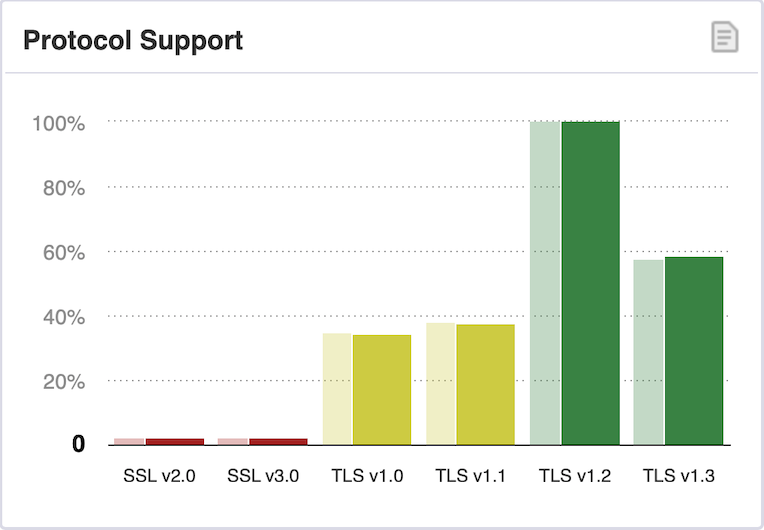
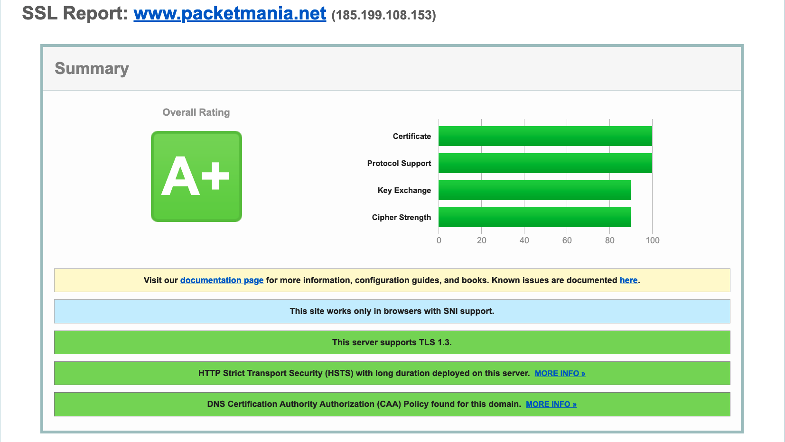
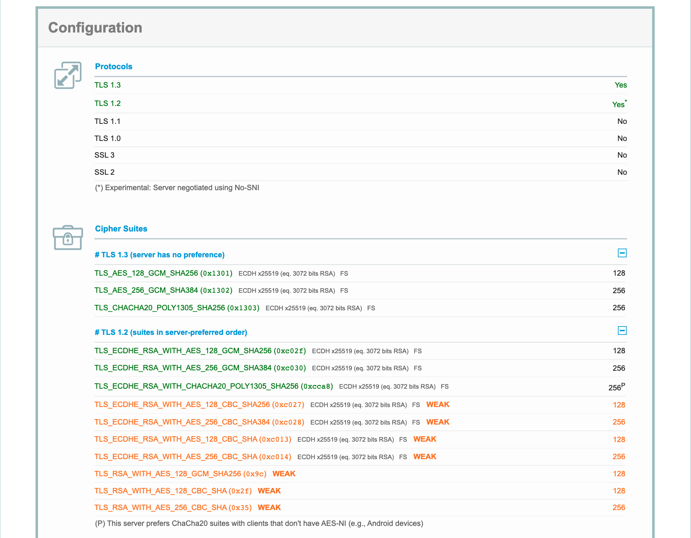
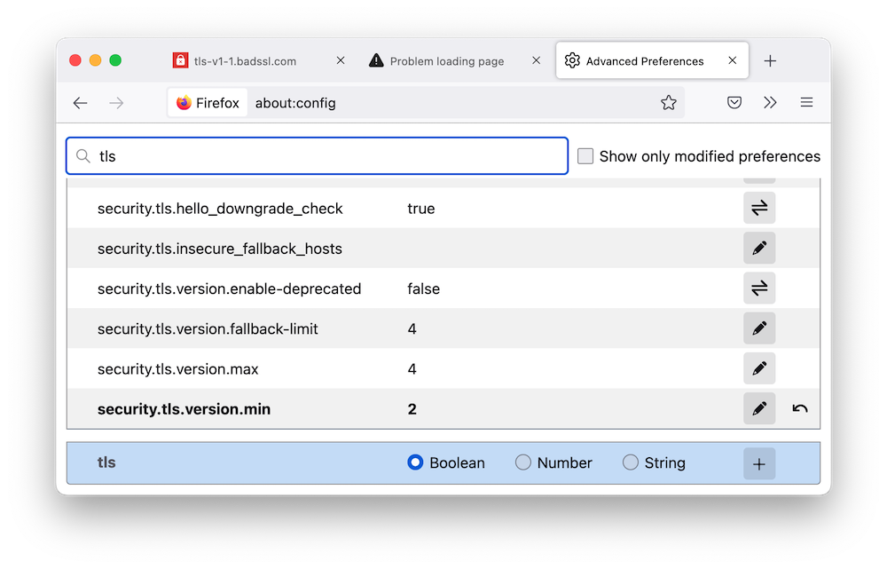
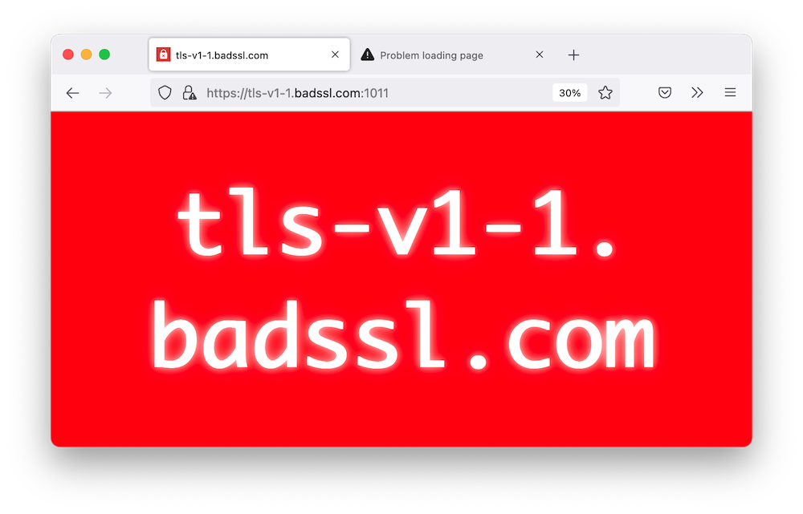

Please Stop Using TLS 1.0 and TLS 1.1 Now!
In March 2021, the Internet Engineering Task Force (IETF) released RFC 8996, classified as a current best practice, officially announcing the deprecation of the TLS 1.0 and TLS 1.1 protocols. If your applications and web services are still using these protocols, please stop immediately and update to TLS 1.2 or TLS 1.3 protocol versions as soon as possible to eliminate any possible security risks.
RFC Interpretation
The document title of RFC 8996 is quite straightforward, "Deprecating TLS 1.0 and TLS 1.1". So what is the rationale it gives? Here is a simple interpretation.
First, take a look at its abstract:
This document formally deprecates Transport Layer Security (TLS) versions 1.0 (RFC 2246) and 1.1 (RFC 4346). Accordingly, those documents have been moved to Historic status. These versions lack support for current and recommended cryptographic algorithms and mechanisms, and various government and industry profiles of applications using TLS now mandate avoiding these old TLS versions. TLS version 1.2 became the recommended version for IETF protocols in 2008 (subsequently being obsoleted by TLS version 1.3 in 2018), providing sufficient time to transition away from older versions. Removing support for older versions from implementations reduces the attack surface, reduces opportunity for misconfiguration, and streamlines library and product maintenance.
This document also deprecates Datagram TLS (DTLS) version 1.0 (RFC 4347) but not DTLS version 1.2, and there is no DTLS version 1.1.
This document updates many RFCs that normatively refer to TLS version 1.0 or TLS version 1.1, as described herein. This document also updates the best practices for TLS usage in RFC 7525; hence, it is part of BCP 195.
The information given here is clear, the reasons for deprecating them are purely technical. TLS 1.0 and TLS 1.1 cannot support stronger encryption algorithms and mechanisms, and cannot meet the high-security requirements of various network applications in the new era. TLS is TCP-based. Corresponding to the UDP-based DTLS protocol, RFC 8996 also announced the deprecation of the DTLS 1.0 protocol.
The Introduction section lists some details of the technical reasons:
- They require the implementation of older cipher suites that are no longer desirable for cryptographic reasons, e.g., TLS 1.0 makes TLS_DHE_DSS_WITH_3DES_EDE_CBC_SHA mandatory to implement.
- There is a lack of support for current recommended cipher suites, especially authenticated encryption with associated Data (AEAD), which were not supported prior to TLS 1.2.
- The integrity of the handshake depends on SHA-1 hash.
- The authentication of the peers depends on SHA-1 signatures.
- Support for four TLS protocol versions increases the likelihood of misconfiguration.
- At least one widely used library has plans to drop TLS 1.1 and TLS 1.0 support in upcoming releases.
Clauses 5 and 6 above are clear and need no further explanation.
For 3DES mentioned in Clause 1, although it uses three independent keys with a total length of 168 bits, considering the possible meet-in-the-middle_attack attack, its effective key strength is only 112 bits. Also, the 3DES encryption block length is still 64 bits, which makes it extremely vulnerable to birthday attack (see Sweet32). NIST stipulates that a single 3DES key group can only be used for encrypting \(2^{20}\) data blocks (ie 8MB). This was of course too small, and eventually, NIST decided in 2017 to deprecate 3DES in the IPSec and TLS protocols.
3DES is just one example, another category that has been phased out earlier is cipher suites that use RC4 stream ciphers, see RFC 7465 for details. In addition, there are various problems in the implementation of block cipher CBC mode, which are often exploited by attackers to crack TLS sessions. A summary of various attacks and countermeasures of TLS 1.0 and TLS 1.1 is described in detail in NIST800-52r2 and RFC7457. These two reference documents provide the key rationale for deprecation. Obviously, any protocol that mandates the implementation of insecure cipher suites should be on the list to be eliminated.
In the second section of the document, the content in Section 1.1 "The History of TLS" of NIST800-52r2 is directly quoted (abbreviated as shown in the following table):
| TLS Version | Protocol Document | Key Feature Update |
|---|---|---|
| 1.1 | RFC 4346 | Improved initialization vector selection and padding error processing to address weaknesses discovered on the CBC mode of operation defined in TLS 1.0. |
| 1.2 | RFC 5246 | Enhanced encryption algorithms, particularly in the area of hash functions, can support SHA-2 series algorithms for hashing, MAC, and pseudorandom function computations, also added AEAD cipher suite. |
| 1.3 | RFC 8446 | A significant change to TLS that aims to address threats that have arisen over the years. Among the changes are a new handshake protocol, a new key derivation process that uses the HMAC-based Extract-and-Expand Key Derivation Function (HKDF), and the removal of cipher suites that use RSA key transport or static Diffie-Hellman key exchanges, the CBC mode of operation, or SHA-1. |
AEAD is an encryption mode that can guarantee the confidentiality, integrity, and authenticity of data at the same time, typically such as CCM and GCM. TLS 1.2 introduced a range of AEAD cipher suites, and its high security made it the exclusive choice for TLS 1.3. These annotate Clause 2 of technical reasons.
Clauses 3 and 4 of technical reasons call out SHA-1, so what is the problem with SHA-1? Section 3 of the document cites a paper by two French researchers, Karthikeyan Bhargavan and Gaetan Leurent .
As a cryptographic hash function, SHA-1 was designed by the National Security Agency (NSA) and then published as a Federal Information Processing Standard (FIPS) by the National Institute of Standards and Technology (NIST). SHA-1 can process a message up to \(2^{64}\) bits and generate a 160-bit (20-byte) hash value known as the message digest. Therefore, the complexity of brute force cracking based on birthday attack is \(2^{80}\) operations. In 2005, Chinese cryptographer Wang Xiaoyun and her research team made a breakthrough in this field. The high-efficiency SHA-1 attack method they published can be used to find a hash collision within a computational complexity of \(2^{63}\). This has brought a huge impact on the security of SHA-1, but it does not mean that the cracking method can enter the practical stage.
Network security protocols (such as TLS, IKE, and SSH, etc.) rely on the second preimage resistance of cryptographic hash functions, that is, it is computationally impossible to find any secondary input value that has the same output as a specific input value. For example, for a cryptographic hash function \(h(x)\) and given input \(x\), it is difficult to find a sub-preimage \(x^′ ≠ x\) that is satisfying \(h(x) = h(x^′)\). Because finding a hash collision does not mean that a sub-preimage can be located, in practice, it was once thought that continuing to use SHA-1 is not a problem.
However, in 2016, Bhargavan and Leurent (who implemented the aforementioned Sweet32 attack against 64-bit block ciphers) discovered a new class of methods to attack key exchange protocols that shattered this perception. These methods are based on the principle of the chosen prefix collision attack. That is, given two different prefixes \(p_1\) and \(p_2\), the attack finds two appendages \(m_1\) and \(m_2\) such that \(h(p_1 ∥ m_1) = hash(p_2 ∥ m_2)\). Using this approach, they demonstrated a man-in-the-middle attack against TLS clients and servers to steal sensitive data, and also showed that the attack could be used to masquerade and downgrade during TLS 1.1, IKEv2, and SSH-2 session handshakes. In particular, they proved that with only \(2^{77}\) operations the handshake protocol using SHA-1 or MD5 and SHA-1 concatenated hash values could be cracked.
Since neither TLS 1.0 nor TLS 1.1 allows the peers to choose a stronger cryptographic hash function for signatures in the ServerKeyExchange or CertificateVerify messages, the IETF confirmed that using a newer protocol version is the only upgrade path.
Sections 4 and 5 of the document again clarify that TLS 1.0 and TLS 1.1 must not be used, and negotiation to TLS 1.0 or TLS 1.1 from any TLS version is not allowed. This means that ClientHello.client_version and ServerHello.server_version issued by the TLS client and server, respectively, must not be {03,01} (TLS 1.0) or {03,02} (TLS 1.1). If the protocol version number in the Hello message sent by the other party is {03,01} or {03,02}, the local must respond with a "protocol_version" alert message and close the connection.
It is worth noting that due to historical reasons, the TLS specification does not specify the value of the record layer version number (TLSPlaintext.version) when the client sends the ClientHello message. So to maximize interoperability, TLS servers MUST accept any value {03,XX} (including {03,00}) as the record layer version number for ClientHello messages, but they MUST NOT negotiate TLS 1.0 or 1.1.
Section 6 of the document declares a textual revision to the previously published RFC 7525 (Recommendations for the Secure Use of TLS and DTLS). Three places in this RFC change implementation-time negotiations of TLS 1.0, TLS 1.1, and DTLS 1.0 from "SHOULD NOT" to "MUST NOT". The last section is a summary of standard RFC operations and security considerations.
Industry Responses
In the industry of large public online services, GitHub was the first to act. They started disabling TLS 1.0 and TLS 1.1 in all HTTPS connections back in February 2018, while also phasing out insecure diffie-hellman-group1-sha1 and diffie-hellman-group14-sha1 key exchange algorithms in the SSH connection service. In August 2018, Eric Rescorla, CTO of Mozilla Firefox, published the TLS 1.3 technical specification RFC 8446. Two months later, Mozilla issued a statement together with the three giants of Apple, Google, and Microsoft, and put the deprecation of TLS 1.0 and TLS 1.1 on the agenda.
The following is a brief summary of the actions of several related well-known companies:
- Microsoft: For Office 365 services, TLS 1.0 and 1.1 disabling for commercial customers was temporarily suspended due to COVID-19. The mandatory rollout of TLS 1.2 was restarted on October 15, 2020. Users of SharePoint and OneDrive will need to update and configure .NET to support TLS 1.2. Users of Teams Rooms recommend upgrading the app to version 4.0.64.0. The Surface Hub released support for TLS 1.2 in May 2019. The Edge browser version 84 does not use TLS 1.0/1.1 by default, while the Azure cloud computing service will permanently obsolete TLS 1.0/1.1 from March 31, 2022.
- Google: As early as 2018, TLS 1.3 was added to Chrome 70. Starting with Chrome 84, support for TLS 1.0 and TLS 1.1 is completely removed. After running TLS 1.3 in Search Engine, Gmail, YouTube, and various other Google services for some time, TLS 1.3 was officially rolled out in 2020 as the default configuration for all new and existing Cloud CDN and Global Load Balancing customers.
- Apple: Announced in September 2021 that TLS 1.0 and TLS 1.1 will be deprecated in iOS 15, iPadOS 15, macOS 12, watchOS 8, and tvOS 15, and support for them be completely removed in future releases. If the user's application activates the App Transport Security (ATS) feature on all connections, no changes are required. Users are also notified to ensure that the web server supports newer TLS versions and to remove the following deprecated
Security.frameworksymbols from the app- tls_protocol_version_t.TLSv10
- tls_protocol_version_t.TLSv11
- tls_protocol_version_t.DTLSv10
- Mozilla: Starting with Firefox version 78, the minimum TLS version configured by default is TLS 1.2. In early 2020, Mozilla briefly removed TLS 1.0 and TLS 1.1 from Firefox completely, but this caused many users to be unable to open some COVID-19 outbreak public information sites, so the related functionality had to be restored. Following this, Mozilla provides helpful information on its technical support page, instructing users to modify the minimum TLS version number in the default configuration as needed.
- Cisco: The Cisco Umbrella (renamed from OpenDNS) service discontinued support for all versions of TLS prior to 1.2 on March 31, 2020. After this, only TLS 1.2 compliant clients will be able to connect. In the router and switch product lines, web management has basically been implemented around 2020 to allow only TLS 1.2 or subsequent versions.
- The CAPWAP connection between Cisco's Wireless Access Point (AP) and Wireless LAN Controller (WLC) is established over DTLS. All 802.11ac Wave 2 and 802.11ax APs from 2015 to the most recent release support DTLS 1.2. The AireOS WLC added DTLS 1.2 functionality in version 8.3.11x.0, and the next-generation C9800 WLC running IOS-XE supports DTLS 1.2 from the start. Note that because of the large number of existing network deployments using older equipment and software versions, DTLS 1.0 support cannot be removed immediately from APs and WLCs at this time to protect user investments. However, DTLS 1.2 is already the default optimal choice for APs and WLCs.
Protocol Test
Both TLS/DTLS clients and servers need to be tested to verify that their implementations follow the current best practices of RFC 8996.
SSL Lab Test
Qualys originated as a non-commercial SSL Lab project. They offer a free and simple client and server testing service, as well as a monitoring panel reporting TLS/SSL security scan statistics for the most popular Internet sites. Below is the most recent chart of protocol support statistics for November 2022.

| Protocol Version | Security | Supporting Sites (Oct. 2022) | Supporting Site (Nov. 2022) | % Change |
|---|---|---|---|---|
| SSL 2.0 | Insecure | 316（0.2%） | 303（0.2%) | -0.0% |
| SSL 3.0 | Insecure | 3,015（2.2%） | 2,930（2.2%) | -0.0% |
| TLS 1.0 | Deprecated | 47,450（34.9%） | 46,691（34.4) | -0.5% |
| TLS 1.1 | Deprecated | 51,674（38.1%） | 50,816（37.5%) | -0.6% |
| TLS 1.2 | Depending on the Cipher Suite and the Client | 135,557（99.8） | 135,445（99.9) | +0.1% |
| TLS 1.3 | Secure | 78,479（57.8%） | 79,163（58.4%) | +0.6% |
As you can see, almost 100% of sites are running TLS 1.2, and the percentage of TLS 1.3 support is close to 60%. This is very encouraging data. While very few sites are still running SSL 2.0/3.0 and TLS 1.0/1.1 are both still supported at around 35%, overall their percentages are continuing to decline and this good trend should continue.
This blog site is served by GitHub Page, enter the URL to SSL Server Test page and submit it to get a summary of the test results as follows.

The site achieved the highest overall security rating of A+. It got a perfect score for certificate and protocol support, and a 90 for both key exchange and password strength. This shows that GitHub fulfills its security promises to users and deserves the trust of programmers.
The configuration section of the report gives details of the test results for protocol support and cipher suites as follows.

This further confirms that the GitHub Page only supports TLS 1.2/1.3, as required by RFC 8996. It can also be seen that under the "Cipher Suites" subheading, TLS 1.3 shows two GCMs and one ChaCha20-Poly1305, which are all cipher suites based on the AEAD algorithms. Three cipher suites of the same type are the preferred TLS 1.2 cipher suites for the server as well. This is exactly the current commonly adopted configuration of secure cryptographic algorithms.
User Selftest
If you suspect that a private server is still using the outdated TLS/SSL protocol, you can do a simple test with the command line tool curl, an example of which is as follows.
1 | ❯ curl https://www.cisco.com -svo /dev/null --tls-max 1.1 |
Here enter the command line option -tls-max 1.1 to set the highest protocol version 1.1 and connect to the Cisco home page. The output shows that the connection failed and that a "protocol version" alert message was received. This indicates that the server has rejected the TLS 1.1 connection request, and the response is exactly what is required by RFC 8996.
The openssl command line tool provided by the general purpose open source cryptography and secure communication toolkit OpenSSL can also do the same test. To test whether the server supports the TLS 1.2 protocol, use the option s_client to emulate a TLS/SSL client and also enter -tls1_2 to specify that only TLS 1.2 is used. The command line runs as follows.
1 | ❯ openssl s_client -connect www.cisco.com:443 -tls1_2 |
This record is very detailed and the format is very readable. From the output, it can be understood that the digital certificate of the Cisco home page server is digitally signed and certified by the root certificate authority IdenTrust. The client-server session is built on the TLS 1.2 protocol, and the selected cipher suite is ECDHE-RSA-AES128-GCM-SHA256 of type AEAD, which is identical to the preferences provided by the GitHub Page.
Browser Test
If you are not sure about the security of your browser and want to test whether it still supports the pre-TLS 1.2 protocols, you can enter the following URL in your browser's address bar.
- https://tls-v1-0.badssl.com (Only support TLS 1.0)
- https://tls-v1-1.badssl.com (Only support TLS 1.1)
After connecting to the second URL with the default configuration of Firefox, the page shows the following
Secure Connection Failed
An error occurred during a connection to tls-v1-1.badssl.com:1011. Peer using unsupported version of security protocol.
Error code: SSL_ERROR_UNSUPPORTED_VERSION
- The page you are trying to view cannot be shown because the authenticity of the received data could not be verified.
- Please contact the website owners to inform them of this problem.
This website might not support the TLS 1.2 protocol, which is the minimum version supported by Firefox.
This error message clearly indicates that Firefox is running a minimum TLS protocol version of 1.2 in this configuration, and since the other side is only running TLS 1.1, the two sides cannot establish a connection.
So what is the result of the connection when the browser does still retain TLS 1.0/1.1 functionality?
For testing purposes, you can first change the default TLS preference value of Firefox to 1.1 by following the steps below (refer to the figure below).
- Open a new tab, type about:config in the address bar, and press Enter/Return.
- The page prompts "Proceed with Caution", click the Accept the Risk and Continue button.
- In the search box at the top of the page, type TLS to display the filtered list.
- Find the security.tls.version.min preference option and click the Edit icon to change the minimum TLS version.
- TLS 1.0 => 1
- TLS 1.1 => 2
- TLS 1.2 => 3
- TLS 1.3 => 4

At this point, then connect to https://tls-v1-1.badssl.com, the result is

This bold red page tells you that the browser you are currently using does not have TLS 1.1 disabled and is a security risk, so try not to use it if you can.
Finally, don't forget to restore the default TLS minimum version setting (3) for Firefox.